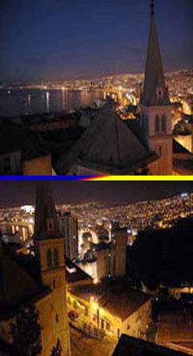
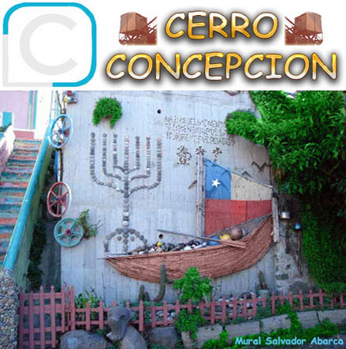
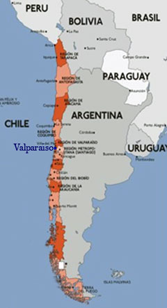

En
Valparaíso
,
Alma Porteña de Chile
, existe un
Cerro
de luces, historia,
entretención
, alegría y
romanticismo
que usted debe
vivir.
Cerro Concepcion
espera por usted



English
Muy pronto,
AQUÍ
, la mejor oferta de Fin de Semana
Español
you for waiting is
CONCEPCION CERRO
. live to have you romanticism and joy, entertainment, history, lights of full Hill sparkling a s`there, Chile of Soul port-Sea,
Valparaíso
In